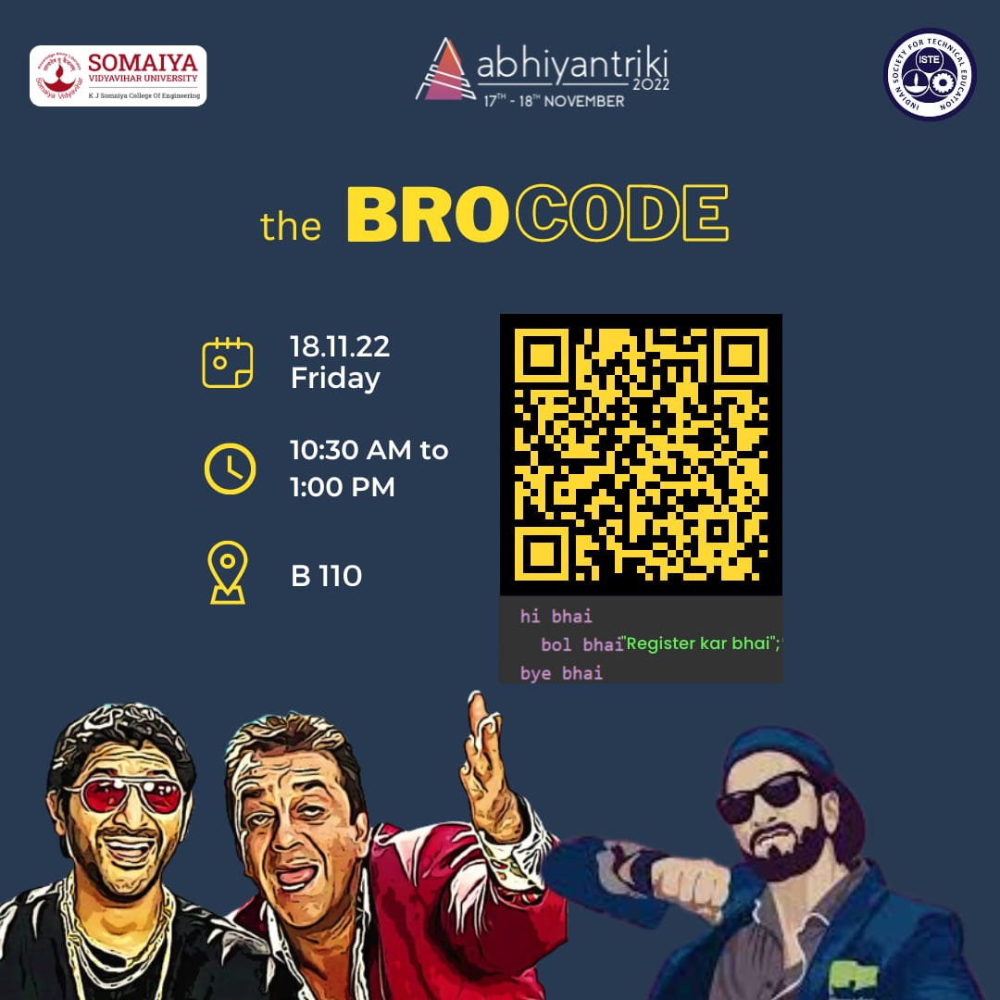
The BroCode -Abhiyantriki 2022
Date Conducted : 18th Nov 2022
No of Participants : Team of 2
Registration Fee : Rs.80/- (for a team of 2)
Prizes Worth : Rs.7000/-
ISTE organized the most fun coding event of Abhiyantriki 2022: The Bro Code !
A one of a kind coding event where you have to solve a problem statement using the 'BhaiLang': a indigenously developed coding language. You will have the option of coding using the BhaiLang or drawing a flowchart.
The winner gets to take home prizes worth ₹ 7,000 !!
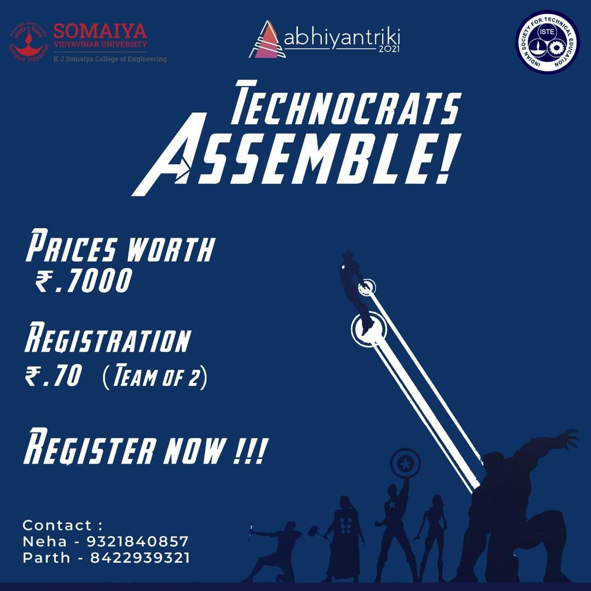
Technocrats Assemble -Abhiyantriki 2021
Date Conducted : 20th Nov 2021
No of Participants : Team of 2
Registration Fee : Rs.70/- (for a team of 2)
Prizes Worth : Rs.7000/-
Well, we all remember the Infinity Stones, don't we? What if you had to find the stones before Thanos would, to avoid him from snapping his fingers.
This is an exciting event as a part of Abhiyantriki 2021 , based on how quickly you can find the stones before another team finds them. To find the stones you will have to solve questions of medium to high difficulty based on technical knowledge and general aptitude.
Get ready to travel the universe to find the Infinity Stones and take home prizes worth ₹ 7,000 !!
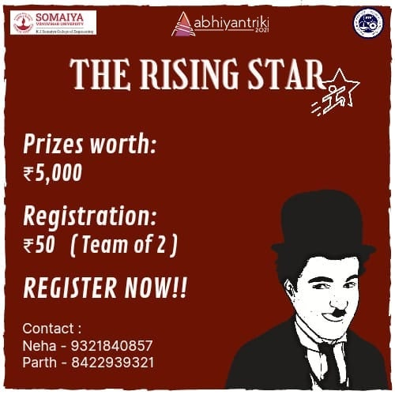
The Rising Star -Abhiyantriki 2021
Date Conducted : 19th Nov 2021
No of Participants : Team of 2 or solo
Registration Fee : Rs.50/- (for a team of 2)
Prizes Worth : Rs.5000/-
Well, who Doesn't want to become an actor in this era! All of us had dreams to become something different. But here we are! This is your chance to become our memestar also know as THE RISING STAR!
This event is based on the story of a rising star! No star is an actor by childhood, you have to surpass levels to become one successful actor! This platform will be giving you quizzes and trivia rounds related to memes, movies and web series!
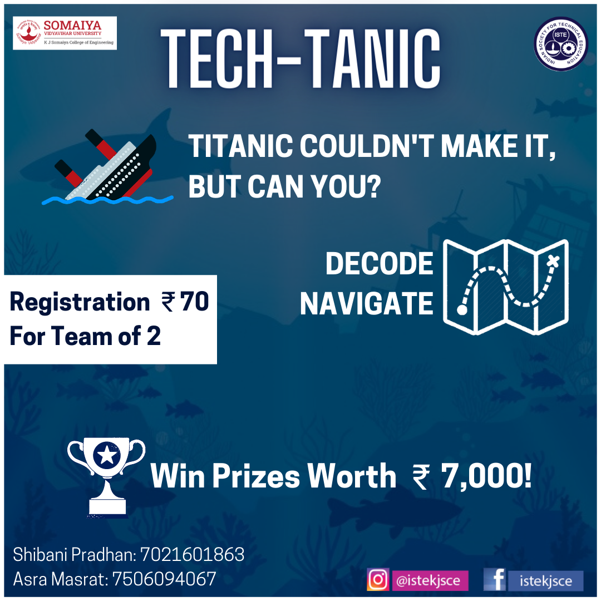
Tech-Tanic -Abhiyantriki 2020
Date Conducted : 23rd October 2020
No of Participants : Team of 2
Registration Fee : Rs.70/- (for a team of 2)
Prizes Worth : Rs.7000/-
'Tech-Tanic', our event for technology geeks out there!
Titanic couldn't make it,but can you? Well, we will see that in the event!
A ship named 'Tech-Tanic' has to travel to the destination following a particular path. There are going to be hurdles along the way, which can be fixed by solving the corresponding questions, and thereby saving the ship from sinking.Every correct answer will get you closer to your destination and every wrong answer will cause your ship to sink. Bon Voyage!
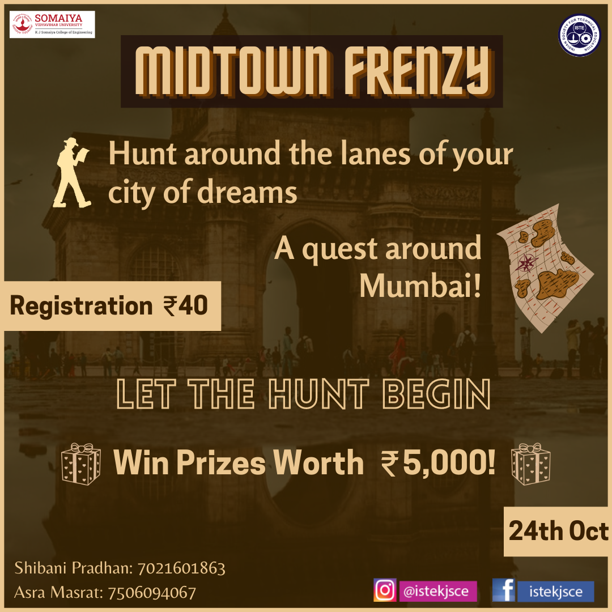
Midtown Frenzy-Abhiyantriki 2020
Date Conducted : 24th October 2020
No of Participants : 1
Registration Fee : Rs.40/-
Prizes Worth : Rs.5000/-
A Mumbai-based millionaire is ready to give away 1 million rupees to the person who wins the quest first. Will you be able to hunt for the missing millions of this millionaire?Let the Hunt Begin..
Midtown Frenzy is essentially a clue-based virtual treasure-hunt that will revolve around different locations in Mumbai.
The questions will be in the form of riddles and clues revolving around the city, twisted with a medium level of complexity. You have to solve each round accurately in order to unlock the next round of the hunt within 45mins !
So,put on your thinking caps and let's re-explore Mumbai this Abhiyantriki!
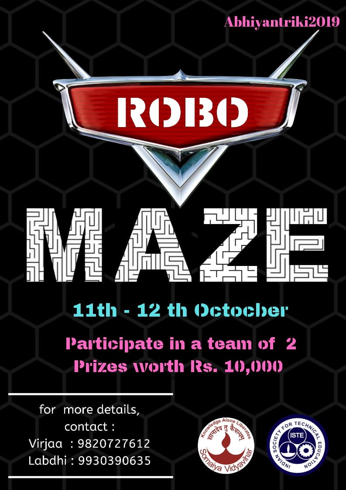
ROBO MAZE-Abhiyantriki 2019
Date Conducted : 11th-12th October 2019
No of Participants : Team of 2
Registration Fee : Rs.70/- (for a team of 2)
Prizes Worth : Rs.10000/-
Robo Maze gives you a chance to assemble a Bot and race with it. The team whose bot reaches the end point in least amount of time wins the game. So Be ready to compete. GET SET GO!!!!
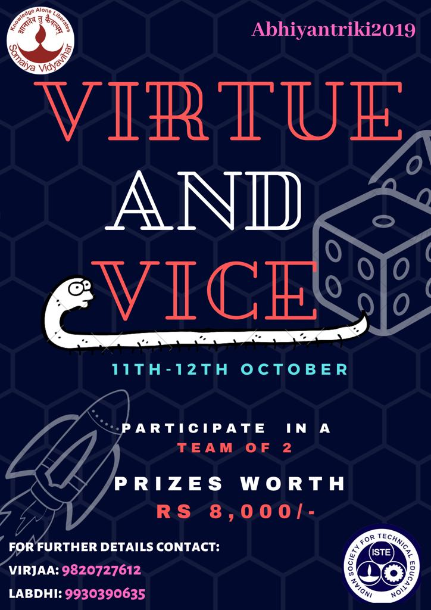
VIRTUE AND VICE-Abhiyantriki 2019
Date Conducted : 11th-12th October 2019
No of Participants : Team of 2
Registration Fee : Rs.50/- (for a team of 2)
Prizes Worth : Rs.8000/-
VIRTUE AND VICE is based on the concept of SNAKES AND LADDERS with its ups and downs.. so you can get your the saanp friends with you as we have team of 2.
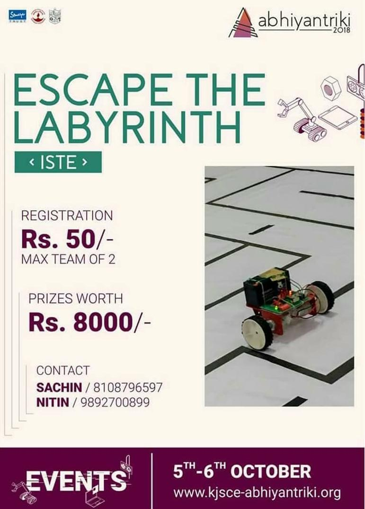
ESCAPE THE LABYRINTH-Abhiyantriki 2018
Date Conducted : 5th-6th October 2018
No of Participants : Team of 2
Registration Fee : Rs.50/- (for a team of 2)
Prizes Worth : Rs.9000/-
The growls of the Minotaur can be heard ringing through the narrow pavements of the labyrinth, as your bot makes it's way inside. Using a smartphone/remote, the participant has to *control a bot* inside a labyrinth filled with the unknown till it reaches an escape. The only way you can make sense of the inside is through a *live stream.* Do you have what it takes to face the terrors that lie inside? (Bots will be provided - Just Run the bot & conquer it like 'tomb raider')
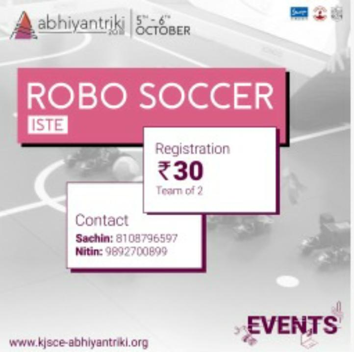
Robo Soccer-Abhiyantriki 2018
Date Conducted : 5th-6th October 2018
No of Participants : Team of 2
Registration Fee : Rs.30/- (for a team of 2)
Robo Soccer was one of the surprise fun events of the fest . In this event people could play in a team of two wherein they would be given 3 minutes time to score against each other , the person scoring maximum goals was the winner... Here students , teachers and even the Army people who were at the fest to present had taken part and enjoyed it to the fullest .The events were liked and appreciated by everyone. Robo Soccer was one of the most successful events of the Techfest. One of the students scored 3 goals in 50 sec and one them even scored 7 goals in the given time of 3 minutes
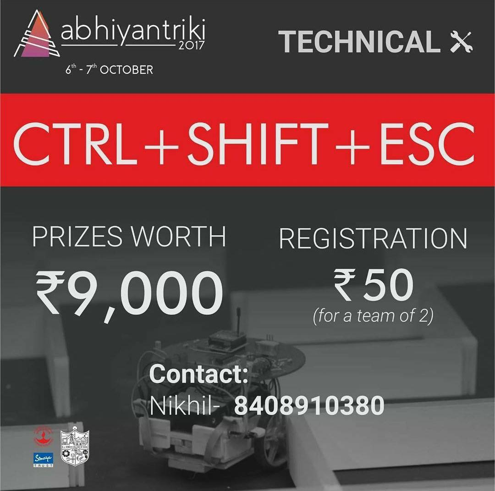
CTRL+SHIFT+ESC-Abhiyantriki 2017
Date Conducted : 6th-7th October 2017
No of Participants : Team of 2
Registration Fee : Rs.50/- (for a team of 2)
Prizes Worth : Rs.9000/-
Put on your thinking caps and put your logical reasoning to test for our event, CTRL+SHIFT+ESC This 4 stage event will be a test of speed and logical reasoning at the same time. This will be a 2 member team event. So, bring your trustworthy comrade along and participate in this event!
Stage 1 : You, the prisoner, are out of the building and needs to exit the facility. The fastest option you have got is to drive. Easy…right? Well, let’s see how easy it is to do so in absolute darkness..;-)
Stage 2 :Managed to reach the exit point of the facility? Not bad! All you have to do now, is to apply logic and open the gates of the facility.
Stage 3 :Completed the stage 2? Good going! Now you have to cross the bridge by the hydraulics way!
Stage 4 :Reached the other end of the bridge? Hurray! You are far away from the facility! Now all you have to do is get out of the car….but only if it were as simple as it sounded.. Solve the gear puzzle successfully to get out of the car. You are a free bird now!

‘ROBOSPRINT’-Abhiyantriki 2016
Date Conducted : 1st October 2016
Time : 11:30am to 5:00pm
Registration Fee : Rs.50/- (for a team of 2)
Prizes Worth : Rs.4000/-
Indian Society for Technical Education (ISTE) conducted an amazing event by the name of ‘ROBOSPRINT’. The event was divided into three parts. The first part consisted of physical obstacles for the bot to overcome. This part also consisted of a simple problem related to mechanics. The next part consisted of coding. Participants had to get the output for the given problem statement in a time span of 30 minutes. The last part of the event had circuit building at its core. The participants had to assemble the given circuit of line follower bot and then using the same bot had to reach the finish line. A total of 20 minutes was allotted for completion of this task. The participants completing all the three tasks in the shortest time were adjudged the winners of the event. A total of 20 teams participated in the event. The success of the event can be attributed to sheer hardwork and dedication of all the team members. The extensive publicity by the PR team, the combined efforts of the event and technical team to get the track together on time and the excellent work of the creative team in getting the posters as well as the delicate portions of the track ready on time. These factors combined to make the event hugely successful.
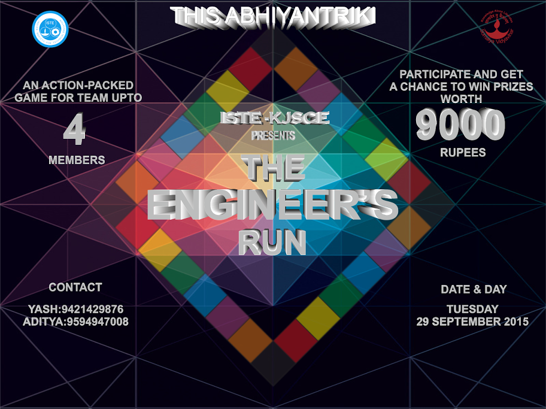
ENGINEER'S RUN
Date Conducted : Abhiyantriki 2015
No of Participants : Team of 4
Registration Fee : Rs.25/- per person (max 4)
Prizes Worth : Rs.9000/-
There will be two levels:
Level 1: All the teams by default will enter in level one. The difficulty level for this round will be intermediate. For each round, 4 teams will play at a time and winner of each round will go to level 2.
Level 2: All winnesr of level 1 will play in this level. This level will consist of one round only. Difficulty level for this round will be hard. The winner will be selected on the basis of the points earned. The board will be divided into four parts: Fun lane Initially four team will start from starting point. First team will be given a die to roll. According to die the task will be assigned to the team. All the team members have to actively participate in the task. Similarly, other teams will be given a task based on the number on the die. Each fun task will be of 10 mins. Mechanical Lane After first round all teams will be on “Mech Point”. In mechanical lane all the task will be related to mechanics. Similarly to fun lane, participants has to roll die and has to perform the task accordingly. All these task will be done in a different room. Each task will be of 30 mins. Coding Lane After the Mechanical lane the participants will be on “Code point”. In Coding lane all the task will be related to coding. The coding will be in either in “C or Java”. Task will be given on die roll. All these task will be done in computer lab. This round will be of 30 mins. Electronic Lane After Coding lane the participants will reach “Silicon valley”. In Electronics lane all the task will be related to electronics. Task will be given on die roll. All these task will be done in a room. Each task will be of 30 mins.
Fun Lane: First team to completes the task in 10 mins will be given 40 points. Second team to complete task in given time will be given 30 points. Third team to complete task in given time will be given 20 points. Last team to complete task in given time will be given 10 points. The team which is not able to do task in 10 mins will not be given any points.
Mechanical lane: First team to completes the task in 30 mins will be given 40 points. Second team to complete task in given time will be given 30 points. Third team to complete task in given time will be given 20 points. Last team to complete task in given time will be given 10 points. No points will be given if team doesn’t perform task in 30 mins.
Coding lane: First team to show output in 30 mins will be given 40 points. Second team to show output in 30 mins will be given 30 points. Third team to show output in 30 mins will be given 20 points. Fourth team to show output in 30 mins will be given 10 points. The team which is not able to show output in 30 mins will not be given any points.
Electronic lane: First team to completes the task in 30 mins will be given 40 points. Second team to complete task in given time will be given 30 points. Third team to complete task in given time will be given 20 points. Last team to complete task in given time will be given 10 points. The team which is not able to do task in 30 mins will not be given any points.
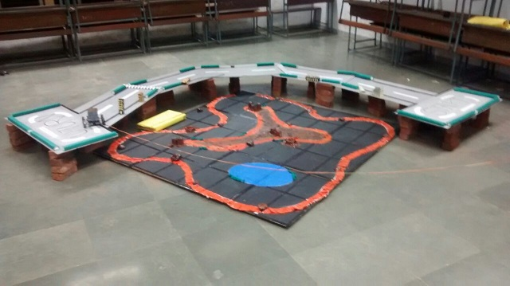
ALIEN TELEPORT
Date Conducted : Abhiyantriki 2015
No of Participants : Team of 2
Rules : Decision of Event Head will be final in case of dispute. Participant can be disqualified if the time limit is exceeded.
Prizes Worth : 1st : Rs.1000/- 2nd : Rs.500/-
The Earth is in a major catastrophe, being destroyed to the very last piece; the inhabitants of the Earth must be teleported to an alien planet through a secret tunnel built by scientists. This is to be done by a special manned robot car by safely sending each human seeking refuge through a vertical tunnel down to the alien planet. This is a two player game, where the first player controls a lower bot (collects the people) and the second player controls the upper bot (teleports people). Overcoming the obstacles efficiently, the team which can teleport maximum people in the stipulated time will be the winning team.
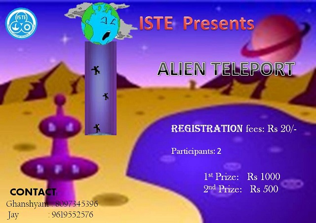
ALIEN TELEPORT
Date Conducted : Abhiyantriki 2014
No of Participants : Team of 2
Rules : Decision of Event Head will be final in case of dispute. Participant can be disqualified if the time limit is exceeded.
Prizes Worth : 1st : Rs.1000/- 2nd : Rs.500/-
The Earth is in a major catastrophe, being destroyed to the very last piece; the inhabitants of the Earth must be teleported to an alien planet through a secret tunnel built by scientists. This is to be done by a special manned robot car by safely sending each human seeking refuge through a vertical tunnel down to the alien planet. This is a two player game, where the first player controls a lower bot (collects the people) and the second player controls the upper bot (teleports people). Overcoming the obstacles efficiently, the team which can teleport maximum people in the stipulated time will be the winning team.
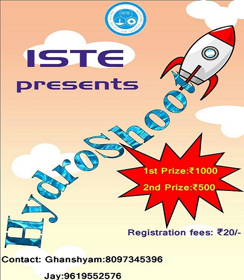
HYDRO-SHOOT
Date Conducted : Abhiyantriki 2014
No of Participants : 1
Rules : Decision of Event Head will be final in case of dispute. Pre-determined number of opportunities will be given to each participant.
Prizes Worth : 1st : Rs.1000/- 2nd : Rs.500/-
A new technique of shooting is here! Aiming at targets just got more interesting as hydro air pressure rockets will lead you to close to, or in the best case, exactly at your bulls eye. So set the projection angle and aim away.
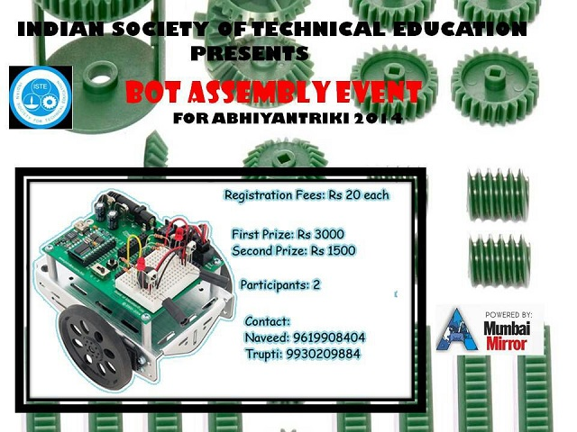
BOT ASSEMBLY
Date Conducted : Abhiyantriki 2014
No of Participants : Team of 2
Rules : Decision of Event Head will be final in case of dispute. Participant can be disqualified if the time limit is exceeded.
Prizes Worth : 1st : Rs.3000/- 2nd : Rs.1500/-
Test your memory and knowledge by participating in this fun filled game. It has 3 levels.
First Round- The participants will face a set of technical questions, which they must answer correctly in a specified time to qualify to the next round.
Second Round- Based on a series of instructions, the teams must assemble the components provided and build a basic robot car. The skills that shall be tested here are efficiency, speed and accuracy of connections.
Third Round- The bot created by the team must be moved through a simple track in order to give it a test drive. The team to complete the 2nd & 3rd rounds fastest wins.

QUIZ-O-NOVA
Date Conducted : Abhiyantriki 2013
No of Participants : Team of 2
Rules : Decision of Event Head will be final in case of dispute. Participant can be disqualified if the time limit is exceeded.
Prizes Worth : 1st : Rs.750/- 2nd : Rs.500/-
Test your memory and knowledge by participating in this Nova i.e new type of quiz on Science-Fiction, Astronomy, current Research and Technology, for sci-fi enthusiasts and Hardware Techies.
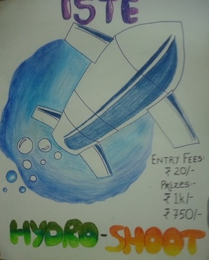
HYDRO-SHOOT
Date Conducted : Abhiyantriki 2013
No of Participants : 1
Rules : Decision of Event Head will be final in case of dispute. Participant can be disqualified if the time limit is exceeded.
Prizes Worth : 1st : Rs.750/- 2nd : Rs.500/-
A new technique of shooting is here! Aiming at targets just got more interesting as hydro air pressure rockets will lead you to close to, or in the best case, exactly at your bulls eye. So set the projection angle and aim away.
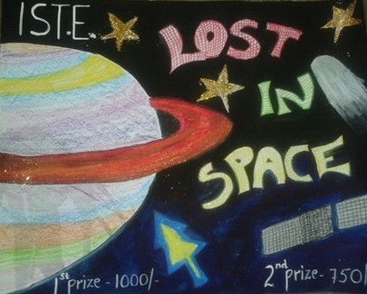
LOST IN SPACE
Date Conducted : Abhiyantriki 2013
No of Participants : 1
Rules : Decision of Event Head will be final in case of dispute. Participant can be disqualified if the time limit is exceeded.
Prizes Worth : 1st : Rs.1000/- 2nd : Rs.750/-
Enjoy the ride of the vehicle launched from Earth to Mars, explore the red planet in your own way. Expect the unexpected and roll on the obstacles. Ambiguous track and rough obstacles, win the race before it is too late.